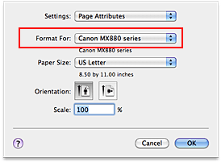

The procedure for printing a document with pages enlarged or reduced is as follows:
-
Select the printer
In the Page Setup Dialog, select your model name from the Format For list.
 -
Set scaled printing
Specify the scaling factor in the Scale box, and click OK.
 Note
Note
-
In the Scale box, enter a value in the range from 1 to 10000% (Mac OS X v.10.6.x, Mac OS X v.10.5.x), or from 25 to 400% (Mac OS X v.10.4.11). If you enter a value other than above, an error message will be displayed.
-
-
Complete the setup
On the Print Dialog, click Print.
When you execute print, the document will be printed with the specified scale.
 Important
Important
-
When the application software which you created the original has the scaled printing function, configure the settings on your application software. You do not need to configure the same setting in the Page Setup dialog.
-
When scaled printing is enabled, you cannot perform borderless printing.